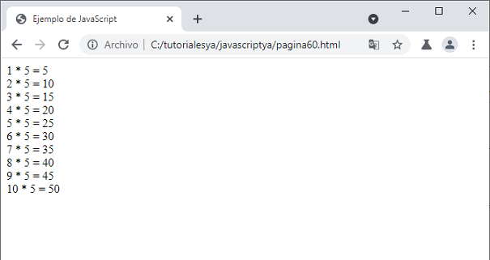

Listado completo de tutoriales
Funciones |
En programación es muy frecuente que un determinado procedimiento de cálculo definido por un grupo de sentencias tenga que repetirse varias veces, ya sea en un mismo programa o en otros programas, lo cual implica que se tenga que escribir tantos grupos de aquellas sentencias como veces aparezca dicho proceso.
La herramienta más potente con que se cuenta para facilitar, reducir y dividir el trabajo en programación, es escribir aquellos grupos de sentencias una sola y única vez bajo la forma de una FUNCION.
Un programa es una cosa compleja de realizar y por lo tanto es importante que esté bien ESTRUCTURADO y también que sea inteligible para las personas. Si un grupo de sentencias realiza una tarea bien definida, entonces puede estar justificado el aislar estas sentencias formando una función, aunque resulte que sólo se le llame o use una vez.
Hasta ahora hemos visto como resolver un problema planteando un único algoritmo.
Con funciones podemos segmentar un programa en varias partes.
Frente a un problema, planteamos un algoritmo, éste puede constar de pequeños algoritmos.
Consta de un nombre y parámetros.
Con el nombre llamamos a la función, es decir, hacemos referencia a la misma.
Los parámetros son valores que se envían y son indispensables para la resolución del mismo.
La función realizará alguna operación con los parámetros que le enviamos. Podemos cargar una variable, consultarla, modificarla, imprimirla, etc.
function <nombre de función>(argumento1, argumento2, ..., argumento n)
{
<código de la función>
}
Debemos buscar un nombre de función que nos indique cuál es su objetivo (Si la función recibe un string y lo centra, tal vez deberíamos llamarla centrarTitulo). Veremos que una función puede variar bastante en su estructura, puede tener o no parámetros, retornar un valor, etc.
Ejemplo: Mostrar un mensaje que se repita 3 veces en la página con el siguiente texto:
'Cuidado' 'Ingrese su documento correctamente' 'Cuidado' 'Ingrese su documento correctamente' 'Cuidado' 'Ingrese su documento correctamente'
La solución sin emplear funciones es:
<!DOCTYPE html>
<html>
<head>
<title>Ejemplo de JavaScript</title>
<meta charset="UTF-8">
</head>
<body>
<script>
document.write("Cuidado<br>");
document.write("Ingrese su documento correctamente<br>");
document.write("Cuidado<br>");
document.write("Ingrese su documento correctamente<br>");
document.write("Cuidado<br>");
document.write("Ingrese su documento correctamente<br>");
</script>
</body>
</html>
Empleando una función:
<!DOCTYPE html>
<html>
<head>
<title>Ejemplo de JavaScript</title>
<meta charset="UTF-8">
</head>
<body>
<script>
function mostrarMensaje() {
document.write("Cuidado<br>");
document.write("Ingrese su documento correctamente<br>");
}
mostrarMensaje();
mostrarMensaje();
mostrarMensaje();
</script>
</body>
</html>
Recordemos que JavaScript es sensible a mayúsculas y minúsculas. Si fijamos como nombre a la función mostrarMensaje (es decir la segunda palabra con la primer letra en mayúscula) debemos respetar este nombre cuando la llamemos a dicha función.
Es importante notar que para que una función se ejecute debemos llamarla desde fuera por su nombre (en este ejemplo: mostrarMensaje()).
Cada vez que se llama una función se ejecutan todas las líneas contenidas en la misma.
Si no se llama a la función, las instrucciones de la misma nunca se ejecutarán.
A una función la podemos llamar tantas veces como necesitemos.
Las funciones nos ahorran escribir código que se repite con frecuencia y permite que nuestro programa sea más entendible.
Hemos estado haciendo uso de funciones existentes por defecto en JavaScript como son:
parseInt parseFloat
Problema: Confeccionar una función que solicite el ingreso de un entero y nos muestre la tabla de multiplicar de dicho valor. Llamar luego una vez a la función.
<!DOCTYPE html>
<html>
<head>
<title>Ejemplo de JavaScript</title>
<meta charset="UTF-8">
</head>
<body>
<script>
function calcularTabla() {
let valor = parseInt(prompt("Ingrese que tabla de multiplicar quiere obtener"))
for (let f = 1; f <= 10; f++) {
let tabla = f * valor;
document.write(f + " * " + valor + " = " + tabla + '<br>')
}
}
calcularTabla();
</script>
</body>
</html>
Dentro de una función podemos definir variables locales como 'valor' y 'f'. También podemos ingresar datos por teclado.
Luego de ingresar el valor 5 por teclado tenemos como resultado en pantalla:
